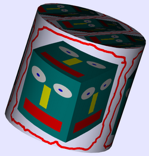
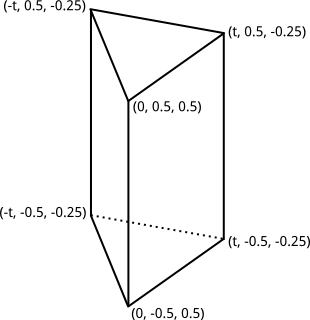
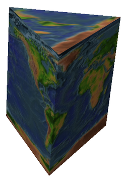
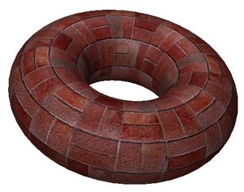

CS 424: Computer Graphics, Spring 2021
Lab 7: Textures
 In this lab, you will work on a program that applies image textures to 3D objects. The image texture can come from an image file loaded by the program. To add some interest, it is also possible to draw an image by hand and use that image as a texture, and it is possible to take a copy of the OpenGL image and draw on top of that by hand. (The last of these options has already been implemented for you.) The web page that you will work on has two canvases, one at the bottom of the page, for drawing, and one on top of that, for displaying an OpenGL scene that shows one 3D object. For the cylinder shown on the right, I drew cartoon face, used it as a texture on a cube, copied the cube image to the paint panel, drew a red curve around the cube, and finally used that image as a texture on a cylinder.
For this lab, you will again be working with the glsim simulation of OpenGL in JavaScript. The API is mostly the same as the C API discussed in the book, except that the data array for glTextImage2D is replaced by an HTML Image or Canvas, and other arrays are always JavaScript arrays or typed arrays.
You will need copies of everything in the folder /classes/cs424/lab7-files. For convenience, if you want to download the files from the web, you can get this zip archive of the folder: lab7-files.zip. You will only work on the web page textures.html.
You should finish this lab by the start of next week's lab but, becasue of Fall break, I will be happy to give an extension to anyone who asks.
Use Drawing As Texture
The file textures.html currently does not do anything at all with textures. You will implement texturing of the 3D objects by adding code to the functions doTextureMenu(), drawPrism(), and display(). You shouldn't have to modify any of the other existing functions. You can also add new global variables and other subroutines if you need them.
OpenGL will attempt to apply a 2D image texture to a primitive if GL_TEXTURE_2D is enabled when the primitive is drawn. For drawing a primitive with no texture, GL_TEXTURE_2D must be disabled. 2D textures can be enabled and disabled by calling
glEnable( GL_TEXTURE_2D ); glDisable( GL_TEXTURE_2D );
This is similar to lighting: When texturing is disabled, all texture settings and texture coordinates are simply ignored. When the item selected in the Texture menu is "none", you just need to make sure that textures are disabled.
Your first task is to use the image from the paint canvas as a texture. This should be done if the value of tex in the doTextureImage() function is "paint". You can store the texture in texture object number 0. Recall that texture object 0 is the default texture object that is bound if you have not bound a different one. But since you will be working with several texture objects in this program, you should make sure that you are actually working with texture object zero by calling
glBindTexture(GL_TEXTURE_2D, 0);
before doing anything with the texture. The currently bound texture object is also the one that is used for texturing objects in the display() method, if texturing is enabled.
In this case, the data for the texture has to come from the canvas where the painting is stored. In the program, that canvas is OSC. You can use this canvas as the last parameter in glTexImage2D(). Since the canvas is 512-by-512 pixels, the command becomes
glTexImage2D( GL_TEXTURE_2D, 0, GL_RGBA, 512, 512, 0, GL_RGBA, GL_UNSIGNED_BYTE, OSC);
But remember that, because we don't have mipmaps for the texture, the texture won't work unless you change the minification filter to GL_LINEAR using glTexParameteri(). (Look up the command in Subsection 4.3.3 if you need to.)
You should be able to get texturing working with the image from the paint program. Make sure that you can also turn texturing off by selecting "None" from the Texture menu.
Image Textures
As discussed in class, the function glTexImage2D can be used to load a texture from an HTML Image object. But you have to deal with two problems. First, there is the problem that in JavaScriot, images are loaded asynchronously, and you can't do anything with the image until it has finished loading. The solution to that is to use a callback function. The other problem comes up when you try to load the image from the local file system. Most browsers won't let you do that directly. You need to either configure your browser to allow it, or you need to run a local web server and access the web page through that. To do the latter on the computers in the lab, open a terminal window, cd into the directory that contains the file textures.html, and give the command
python3 -m http.server
Then, to access the page, enter localhost:8000/textures.html in the address bar of your web server.
In the doTextureMenu() function, when tex is not "none" or "paint", then it is a number that tells which texture to use. The number is an index into the global array textureURLs. That is, the URL that you need to use when you load the image is textureURLs[tex].
There is another global array, textureObjectIDs, which is filled with −1's. The idea is that a given texture image should only have to be loaded once, when it is first used. Wen it is loaded, you can create a texture object for it, bind that texture object while you are loading and configuring the texture, and store the texture object ID in the textureObjectIDs array. When the user selects a texture from the menu, if the corresponding value in textureObjectIDs is −1, then you have to load the texture. But if the value in textureObjectIDs is not −1, then all that you need to do is bind the texture object (and make sure texturing is enabled).
In the case where you have to load the texture, you have to deal with the asynchronous nature of image loading. In general outline, the code for loading the texture image, and using it the first time, can look like this:
let img = new Image(); // Create an HTML Image object
img.onload = function() { // Callback function to be called after loading.
// Create a texture object and bind it (and save the ID)
// Load the image into the texture with glTexImage2D.
// (NOTE: image width and height are given by img.width and img.height)
// Configure the texture (including the minification filter).
};
img.onerror = function() { // To be called if an error occurs while loading.
// Respond to error. For example: alert("Texture could not be loaded.");
};
try {
img.src = URL; // Set img.src to the URL for the image.
} catch (e) {
// some browsers throw a security exception when loading from file system.
// Respond to error. For example: alert("Texture could not be loaded.");
}
// Might want to set up an appropriate state during image loading, such
// as showing a message that texture is being loaded, but then you have to
// remember to get rid of the message later.
In a serious web app, it can be difficult to decide exactly what to do while waiting for the image to load, but for this little program, you don't need to do anything fancy.
Texture Coordinates for the Prism
The last object in the "Object" menu is a "Triangular Prism." That object is drawn in the function drawPrism() using glBegin/glEnd. However, the object doesn't have texture coordinates. What this means, really, is that all of the vertices in the prism use the same texture coordinates, and when texturing is enabled, the whole prism will get its color from a single point in the currently bound texture.
The coordinates for the vertices of the prism are shown on the left, below. (The value of t is Math.sqrt(3)/4, which gives an equilateral triangle for the base.) You should provide texture coordinates for each vertex in the primitives. The texture must wrap exactly once around the sides of the prism. That is, you should use a different 1/3 of the texture for each side, and the pieces should meet up nicely at the edges between the sides. For the top and bottom of the prism, you can cut out whatever triangular area you like from the texture. The prism with the Earth texture is shown on the right:
 
It will require some care to get the texture coordinates correct. Plan before you begin! It might be helpful to write out the texture coordinates on the drawing of the prism. Also, I suggest that you work on the front left face first, and get that right before working on the other two sides.
Texture Transformation
Finally, you should implement a texture transformation in the display() method, before the textured object is drawn. (Note that it is harmless to apply a texture transformation even if texturing is disabled, so you don't need to test anything before doing it.) You will use a simple scaling transformation that uses the values from the Horizontal Scale and Vertical Scale menus to scale the texture. You can get the scaling factosr from that menu with
let horizontalScale = Number( document.getElementById("hscale").value );
let verticalScale = Number( document.getElementById("vscale").value );
Scalling the texture by a factor of N actually means that the texture will be repeated N times in the space where only one copy of the texture would normally be. Texture transformations can be used to better adapt an image to a surface when the surface has texture coordinates that are not appropriate for the texture image. For example, the "Brick" texture fits the torus better with a horizontal scale factor of 4 and a vertical scale factor of 2:

To apply a texture transformation, you need to change the matrix mode to GL_TEXTURE by calling glMatrixMode(GL_TEXTURE), and the first thing to do to the texture transformation is to load the identity, so that you have a known starting point. See Subsection 4.3.4 for details and sample code.